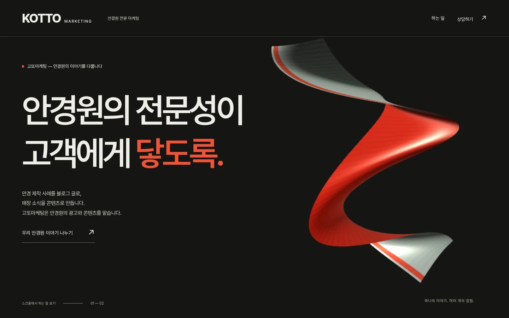
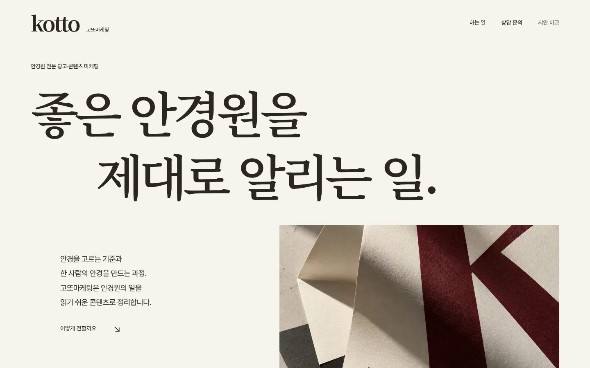
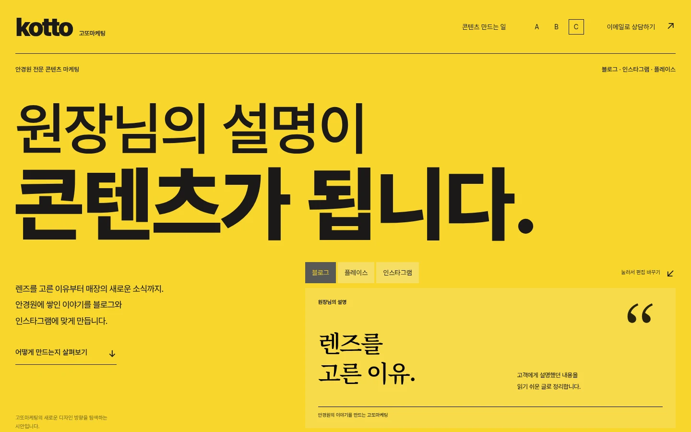

고또마케팅의 새로운 홈페이지를 위한
세 가지
새로운 방향.
화면을 열고, 스크롤하고, 눌러보세요.
같은 이야기를 서로 다른 방식으로 전합니다.


비교할 때 살펴볼 것.
첫 화면에서 안경원 전문 마케팅 회사가 떠오르는지, 글이 편하게 읽히는지, 움직임이 이야기에 도움이 되는지 살펴봐 주세요.
각 시안은 데스크톱과 모바일에서 다르게 구성됩니다. 기기의 ‘동작 줄이기’ 설정도 지원합니다. 문의 버튼은 실제 이메일 앱으로 연결됩니다.
이 페이지는 디자인 비교용입니다. 등장하는 그래픽과 편집 예시는 고객 프로젝트나 성과 사례가 아닙니다.